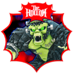

🥚 Steal An Egg e oficial side quest în The Hollow

📊 UPDATE 23 oct, 17:46 RO: citirea noastră din API-ul public Roblox arată 1.469.703 jucători online și 9.139.068.060 vizite pe Steal An Egg. Pentru comparație, Terra a citit la 17:41 RO ~1,47M jucători și 9.138.605.479 vizite.
🥚 Steal An Egg are un badge oficial pentru The Hollow, eventul de Halloween al Roblox: „The Hollow 26”.
✅ Ce am verificat noi în API-ul public Roblox (23 oct, 17:42 RO):
- 🏅 Badge-ul „The Hollow 26” e acordat de jocul Steal An Egg (universe 10563114921)
- 📅 A fost creat pe 20 oct, la 17:16 (ora României)
- 👥 L-au primit 2.086.892 de jucători, dintre care 1.991.896 în ultima zi
- 🎮 Steal An Egg avea 1.464.709 jucători online și 9.138.707.887 vizite
🗺️ Steal An Egg apare și pe posterul The Hollow cu logo-ul Roblox, la secțiunea THE OUTSKIRTS – Side quests across Roblox. Posterul a fost distribuit de SirDapper, creator #RobloxPartner al The Hollow: https://x.com/SirDapper/status/2112997537153970608
⚠️ Ca să fie clar: Roblox nu a numit Steal An Egg pe X sau pe newsroom. Pe newsroom sunt doar cele 9 jocuri cu monștri. Condiția exactă a badge-ului nu e anunțată oficial.
🔗 Tot despre The Hollow: https://pyromanc3r777.github.io/vexu-hq/posts/the-hollow-eventul-de-halloween-al-roblox-vine-pe-22-octombrie.html
📅 The Hollow în calendar (23 oct – 2 nov): https://pyromanc3r777.github.io/vexu-hq/calendar.html#g=roblox
🎮 Toate știrile Steal An Egg: https://pyromanc3r777.github.io/vexu-hq/joc/steal-an-egg.html
Follow pe TikTok @vexu_online și abonare pe YouTube la VEXU Online. Follow = Au ce bile! 💥